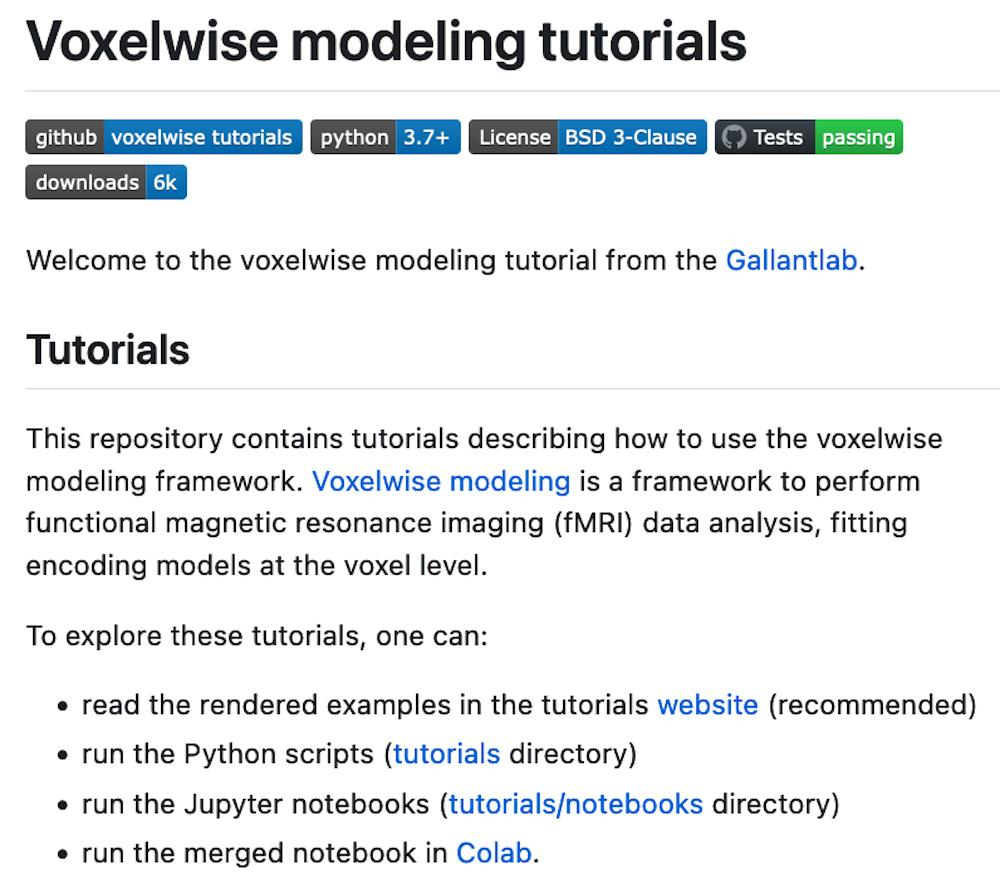

Learn

Voxelwise modeling is a framework for fitting linear(ized)
encoding models to functional magnetic resonance imaging (fMRI)
datasets. Voxelwise modeling can produce high-resolution,
high-dimensional functional brain maps in single individuals,
while minimizing problems due to Type 1 and Type 2 error that are
common in other approaches to fMRI data analysis. This tutorial
provides step-by-step instruction on how to use this method.